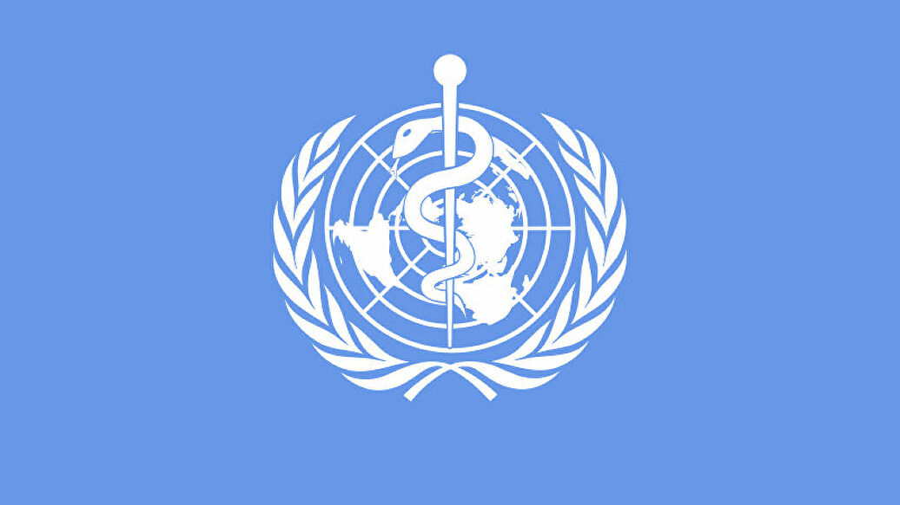

Назад

Всемирная организация здравоохранения определяет наркотик как химический агент, вызывающий ступор, кому или нечувствительность к боли. Употребляется для обозначения запрещенных наркотических лекарственных средств независимо от их фармакологии.
Наркотические вещества можно разделить на:
- запрещенные к обороту наркотические средства (гашиш, героин, ЛСД, МДМА) и психотропные вещества;
- наркотические средства (кодеин, кокаин, морфин) и психотропные вещества, оборот которых ограничен и контролируется;
- ограниченные к обороту психотропные вещества (декстрометорфан, тарен), для которых исключаются некоторые меры контроля;
- вещества, используемые в производстве психоактивных веществ (прекурсоры), и яды, оборот которых ограничен и в отношении которых устанавливаются меры контроля (серная кислота, ацетон, нитрометан, толуол).
ВОЗ в самом широком смысле определяет психотроп как воздействующее на рассудок и психические процессы вещество. В узком значении психотропное лекарственное средство – это любой химический агент, который главным образом или существенно воздействует на центральную нервную систему.
Закон Республики Беларусь «О наркотических средствах, психотропных веществах, их прекурсорах и аналогах» от 13 июля 2012 г. № 408 – З определяет прекурсоры наркотических средств, психотропных веществ как химические вещества, включенные в Республиканский перечень, используемые при изготовлении, производстве и переработке наркотических средств, психотропных веществ.
Информацию о том, какие наркотические средства и психотропные вещества относятся к особо опасным веществам, а какие к разрешенным к контролируемому обороту, можно найти в Республиканском перечне наркотических средств, психотропных веществ и их прекурсоров, подлежащих государственному контролю в Республике Беларусь .